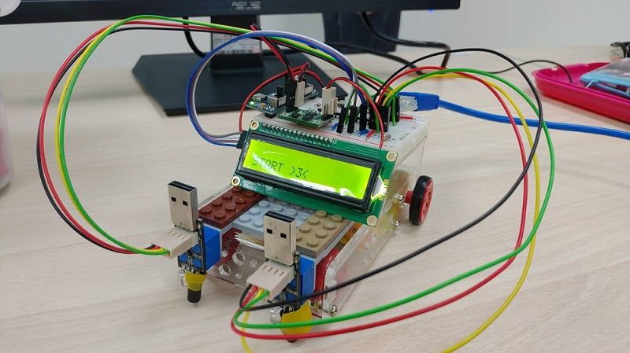
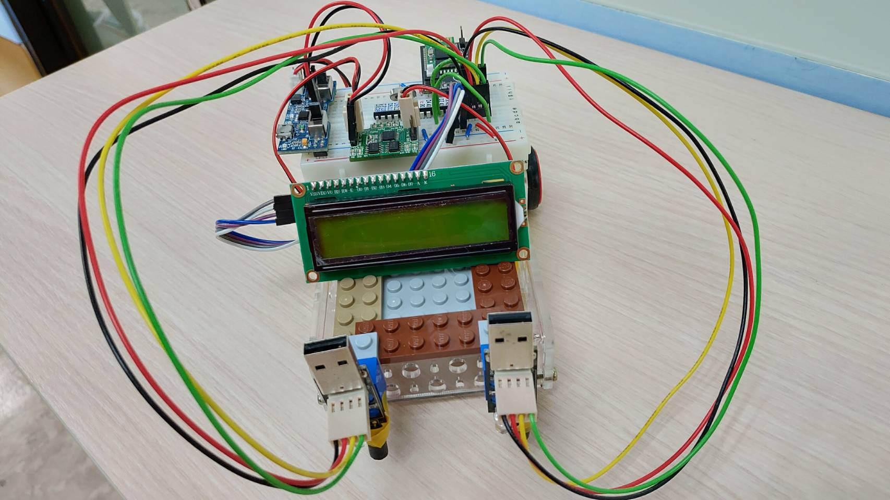

藍芽 Bluetooth & 超音波偵測
| //可設範圍（loop不能大於 set的秒數） #include <NewPing.h> #define TRIGGER_PIN 5 #define ECHO_PIN 6 #define MAX_DISTANCE 200 #define DirR 12 #define DirL 11 #define PwmL 9 #define PwmR 10 NewPing sonar(TRIGGER_PIN, ECHO_PIN, MAX_DISTANCE); int irin; void cM(int dL,int dR,int sL,int sR){ digitalWrite(PwmL, 0); digitalWrite(PwmR, 0); delay(200); digitalWrite(DirL,dL); digitalWrite(DirR,dR); analogWrite(PwmL,sL); analogWrite(PwmR,sR); } int inB; void setup(){ Serial.begin(115200); pinMode( DirL , OUTPUT); pinMode( DirR , OUTPUT); cM(HIGH,HIGH,0,0); } void loop(){ if (Serial.available() > 0) { inB= Serial.read(); if (inB == '1') { if(sonar.ping_cm() < 5){ cM(HIGH,HIGH,0,0); //停 cM(LOW,HIGH,255,255);//順時針 cM(HIGH,HIGH,255,255);//前進 } else{ cM(HIGH,HIGH,150,255);//左前方前進 } delay(2000); } else if (inB == '2') { if(sonar.ping_cm() < 5){ cM(HIGH,HIGH,0,0); //停 cM(LOW,HIGH,255,255);//順時針 cM(HIGH,HIGH,255,255);//前進 } else{ cM(HIGH,HIGH,255,255);//前進 } delay(2000); } else if (inB == '3') { if(sonar.ping_cm() < 5){ cM(HIGH,HIGH,0,0); //停 cM(HIGH,LOW,255,255);//逆時針 cM(HIGH,HIGH,255,255);//前進 } else{ cM(HIGH,HIGH,255,155);//右前方前進 } delay(2000); } else if (inB == '4') { cM(HIGH,LOW,255,255);//逆時針 delay(2000); } else if (inB == '5') { if(sonar.ping_cm() < 5){ cM(HIGH,HIGH,0,0); //停 cM(HIGH,LOW,255,255);//逆時針 cM(LOW,LOW,255,255);//後退 } else{ cM(LOW,LOW,255,255);//後退 } delay(2000); } else if (inB == '6') { cM(LOW,HIGH,255,255);//順時針 delay(2000); } else if (inB == '7') { cM(HIGH,HIGH,0,0); //停 delay(2000); } } } |
app inventor


車車(12.17)

車車(12.30)

紅外線感測
| //聲控自走車車 //目的:可以一邊透過藍芽聲控，當快從桌邊掉下去的時候，紅外線會感測並停止移動，並顯示於螢幕上，等待下一個聲控指令 #define DirR 12 #define DirL 11 #define PwmL 9 #define PwmR 10 //螢幕:SDA(紫)A4；SCL(藍)A5；白接正；灰接負 #include <LiquidCrystal_I2C.h> LiquidCrystal_I2C lcd(0x3F, 16, 2); //螢幕顯示 #define infrared1 A1 //右紅外線 #define infrared2 A2 //左紅外線 int val1, val2; //val1:A1 val2:A2 int irin; int inB = 0; int inBB = inB; int check = 0; void cM(int dL, int dR, int sL, int sR) { //馬達移動的函式=>醬子就不用一直寫了 digitalWrite(DirL, dL); digitalWrite(DirR, dR); analogWrite(PwmL, sL); analogWrite(PwmR, sR); } void setup() { lcd.init(); lcd.backlight(); //螢幕背景調成亮的 lcd.setCursor(0, 1); //由(0,1)這個位置顯示 lcd.print("START >3<"); Serial.begin(115200); //藍芽接收 analogWrite(PwmL, 0); analogWrite(PwmR, 0); cM(HIGH, HIGH, 0, 0); delay(3000); lcd.clear(); } void loop() { val1 = analogRead(infrared1); val2 = analogRead(infrared2); if (Serial.available() > 0) { char i = Serial.read(); //給藍芽輸入的值 inB = i - 48; //輸入是char 轉成 int if (inB == 4)inB = 8; if (inB == 5)inB = 10; } //左前方前進 while (inB == 1) { if (inBB != 1) //車子在行進時無法順暢的前進而是會走走停停，加了一個if做判斷， //讓他檢查前一次與這一次的指令是否相同，再決定要不要做停的動作 { digitalWrite(PwmL, 0); digitalWrite(PwmR, 0); delay(300); } if (val2 < 300) { //當左邊紅外線還感應在桌面上時 cM(HIGH, HIGH, 100, 250); if (check != 11) //螢幕原來會有閃動一邊顯示的問題，加了個if做判斷何時清除有好一些 lcd.clear(); lcd.setCursor(0, 1); lcd.print("LEFT+FRONT"); //delay(300); inBB = 1; check = 11; } else { cM(HIGH, HIGH, 0, 0); if (check != 12) lcd.clear(); lcd.setCursor(0, 1); lcd.print("GONNA FALL DOWN1"); check = 12; break; } val1 = analogRead(infrared1); val2 = analogRead(infrared2); if (Serial.available() > 0) { //迴圈內更新藍芽出入值作為跳出的標準 char i = Serial.read(); inB = i - 48; if (inB == 4)inB = 8; if (inB == 5)inB = 10; } } //前進 while (inB == 2) { if (inBB != 2) { digitalWrite(PwmL, 0); digitalWrite(PwmR, 0); delay(300); } if (val1 < 300 && val2 < 300) { //當左邊&右邊紅外線還感應在桌面上時 cM(HIGH, HIGH, 180, 180); if (check != 21) lcd.clear(); lcd.setCursor(0, 1); lcd.print("FRONT:180"); //delay(300); inBB = 2; check = 21; } else { cM(HIGH, HIGH, 0, 0); if (check != 22) lcd.clear(); lcd.setCursor(0, 1); lcd.print("GONNA FALL DOWN2"); check = 22; delay(300); break; } val1 = analogRead(infrared1); val2 = analogRead(infrared2); if (Serial.available() > 0) { char i = Serial.read(); inB = i - 48; if (inB == 4)inB = 8; if (inB == 5)inB = 10; } if (inB != 2)break; } //右前方前進 while (inB == 3) { if (inBB != 3) { digitalWrite(PwmL, 0); digitalWrite(PwmR, 0); delay(300); } if (val1 < 300) { //當右邊紅外線還感應在桌面上時 cM(HIGH, HIGH, 250, 150); if (check != 31) lcd.clear(); lcd.setCursor(0, 1); //等於(0,1) lcd.print("RIGHT + FRONT"); check = 31; inBB = 3; } else { cM(HIGH, HIGH, 0, 0); if (check != 32) lcd.clear(); lcd.setCursor(0, 1); lcd.print("GONNA FALL DOWN3"); check = 32; break; } val1 = analogRead(infrared1); val2 = analogRead(infrared2); if (Serial.available() > 0) { char i = Serial.read(); inB = i - 48; if (inB == 4)inB = 8; if (inB == 5)inB = 10; } } //以下 順時針、逆時針、停止、後退 不需同時接收藍芽&紅外線： //因為順時針、逆時針都是在原地轉，沒有掉下來的問題，後退則是因為沒有向後的紅外線感應器，所以無法判斷 //逆時針 //inB(藍芽感測值)會感測到4 //原來用 inB==4 會有藍芽輸出後車子大當機的問題，所以改成8試試 while (inB == 8) { if (inBB != 8) { digitalWrite(PwmL, 0); digitalWrite(PwmR, 0); delay(300); } cM(LOW, HIGH, 120, 120); if(check != 4) lcd.clear(); lcd.setCursor(0, 1); lcd.print("COUNTERCLOCKWISE"); inBB = 8; check = 4; val1 = analogRead(infrared1); val2 = analogRead(infrared2); if (Serial.available() > 0) { char i = Serial.read(); inB = i - 48; if (inB == 4)inB = 8; //4修改轉成8 if (inB == 5)inB = 10; //5修改轉成10 } } //BT4 end //後退 //inB(藍芽感測值)會感測到5 //原來用 inB==5 會有藍芽輸出後車子大當機的問題，所以改成10試試 while (inB == 10) { if (inBB != 10) { digitalWrite(PwmL, 0); digitalWrite(PwmR, 0); delay(300); } cM(LOW, LOW, 120, 120); if(check != 5) lcd.clear(); lcd.setCursor(0, 1); lcd.print("BACK:150"); inBB = 10; check = 5; val1 = analogRead(infrared1); val2 = analogRead(infrared2); if (Serial.available() > 0) { char i = Serial.read(); inB = i - 48; if (inB == 4)inB = 8; if (inB == 5)inB = 10; } } //順時針 while (inB == 6) { if (inBB != 6) { digitalWrite(PwmL, 0); digitalWrite(PwmR, 0); delay(300); } cM(HIGH, LOW, 100, 100); if(check!=6) lcd.clear(); lcd.setCursor(0, 1); lcd.print("CLOCKWISE"); inBB = 6; check = 6; val1 = analogRead(infrared1); val2 = analogRead(infrared2); if (Serial.available() > 0) { char i = Serial.read(); inB = i - 48; if (inB == 4)inB = 8; if (inB == 5)inB = 10; } } //停 while (inB == 7) { if (inBB != 7) { digitalWrite(PwmL, 0); digitalWrite(PwmR, 0); delay(300); } cM(HIGH, HIGH, 0, 0); if(check!=7) lcd.clear(); lcd.setCursor(0, 1); lcd.print("STOP"); inBB = 7; check = 7; val1 = analogRead(infrared1); val2 = analogRead(infrared2); if (Serial.available() > 0) { char i = Serial.read(); inB = i - 48; if (inB == 4)inB = 8; if (inB == 5)inB = 10; } } } //LOOP END |